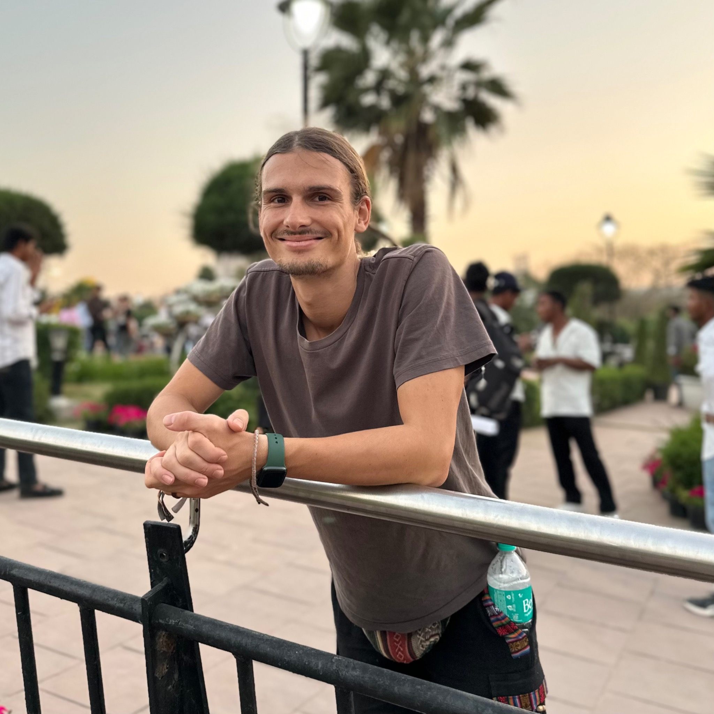

AUSBILDUNG

Akademie der Naturheilkunde
Ausgebildeter ganzheitlicher Ernährungsberater (AKN Akademie). Das Zertifizierungssiegel der Akademie der Naturheilkunde bestätigt meine absolvierte Ausbildung.
Mich begeistert, wie Ernährung, Gesundheit und unser Alltag zusammenhängen. Ich möchte wissenschaftlich orientiertes Wissen verständlich vermitteln und Menschen dabei unterstützen, ihren eigenen, passenden Weg zu mehr Wohlbefinden zu finden.
In meiner Arbeit verbinde ich meine Erfahrungen aus der Sozialen Arbeit mit meiner Ausbildung in ganzheitlicher Ernährungsberatung.

Ich bin staatlich anerkannter Sozialarbeiter und habe einen Bachelorabschluss in Sozialer Arbeit. Ergänzend dazu habe ich eine Ausbildung zum ganzheitlichen Ernährungsberater an der Akademie der Naturheilkunde (AKN) absolviert.
Durch meine Arbeit mit Menschen weiß ich, wie unterschiedlich Lebenssituationen, Bedürfnisse und Möglichkeiten sein können. Deshalb stehen für mich alltagstaugliche und individuelle Lösungen im Mittelpunkt – nicht starre Regeln oder pauschale Ernährungspläne.
Ausgebildeter ganzheitlicher Ernährungsberater (AKN Akademie). Das Zertifizierungssiegel der Akademie der Naturheilkunde bestätigt meine absolvierte Ausbildung.
Staatlich anerkannter Sozialarbeiter mit Erfahrung in der pädagogischen Arbeit und Wissensvermittlung.
Jeder Mensch bringt andere Gewohnheiten, Ziele und Voraussetzungen mit. Empfehlungen sollten dazu passen.
Ich lege Wert auf eine verständliche Einordnung von Erkenntnissen und einen bewussten Umgang mit Gesundheitsinformationen.
Mich beschäftigen die Zusammenhänge zwischen Ernährung, Umwelt, Tierwohl und gesellschaftlicher Verantwortung.
In meiner Freizeit mache ich hobbymäßig elektronische Musik. Meine Tracks findest du unter dem Namen Veganiel auf SoundCloud, Spotify und Apple Music / iTunes.
Du möchtest deine Ernährung bewusster gestalten oder hast Fragen zur Beratung? Ich freue mich darauf, von dir zu hören.
Kontakt aufnehmen